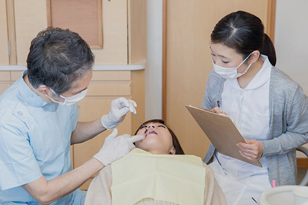
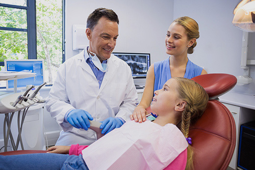
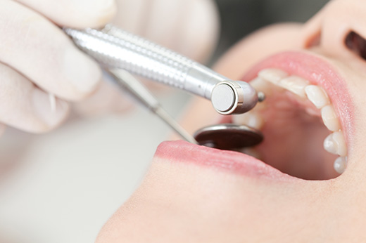

- ホーム
- 当院の特徴
天王寺まつい総合歯科の特徴&診療のこだわり
当院の特徴
天王寺まつい総合歯科には以下に挙げるような特徴があり、天王寺区(四天王寺前夕陽ヶ丘・寺田町・桃谷)、生野区にお住いの方はもちろんのこと、遠方からの患者さまもたくさんご来院いただいております。
通院しやすい立地
桃谷駅、寺田町駅、四天王寺前夕陽ヶ丘駅から徒歩圏内で、玉造筋と勝山通りの交差点であり、バス停勝山四丁目すぐそばにありますので、公共交通機関だけでなく、お車でもお越しになっていただけます。
忙しい方でも通院可能な診療時間

当院は、平日は20時30分まで診療を行っております。土日・祝日・お盆・年末・お正月も対応しており、お休みの日の不測の事態にも安心です。平日はお仕事でお忙しい方という方でも通いやすい診療時間を設定しております。
インプラントオペ等は、通常の診療時間の他にも、平日午前(オペ・出張オペタイム)、金曜日(オペ・出張オペ日) に優先的に診療可能となっております。
いつも同じスタッフが担当
当院では、担当する歯科医師や歯科衛生士を固定しておりますので、いつも同じスタッフが診療にあたります。
衛生面への配慮

診療に使用する器具は、診療中でも高速滅菌器を使用し、使用後すべて滅菌処理を施します。滅菌を行えないものに関しては、可能な限りディスポーザブル品を使用しております。
ていねいな治療説明

まず、状態を把握するため資料収集を行い、それから診査診断し治療計画を立てます。
患者さまへの治療説明は、わかりやすい言葉でていねいに行うように心がけております。
処置をひとつ行うごとに説明させていただき、患者さまと二人三脚で治療のゴールへと進んでいけたら幸いです。
開放感のある院内・完全個室の診療室
当院は、待合室から診療室に至るまで、開放感のある広々とした院内設計が特徴です。医院は3階建てで、待合室は天井吹き抜けとなっております。ベビーカーや車いすでの移動も容易なユニバーサルデザインを採用しております。
また、完全個室の診療室もございますので、患者様のプライバシーにも配慮して治療を行う事が可能になっております。
お子さま連れの方も気軽に通院できる設備環境
天王寺まつい総合歯科には、お子さま連れの患者さまがたくさんいらっしゃいます。キッズスペースやおむつ替えシートが完備されており、お子さま連れでも気軽に通院できる設備環境が整っています。
診療へのこだわり
可能な限り「痛くない」治療
当院では、歯科治療に伴う痛みを最小限に抑えるため、以下に挙げる取り組みを実施しております。
- 表面麻酔
注射針による麻酔を施す前には、必ず表面麻酔を行います。ロールワッテなどを用いて麻酔薬を塗布したりシール状のものを貼ったりするだけなので、表面麻酔自体に痛みは伴いません。5分ほどすれば、歯茎の感覚が麻痺し、注射針を刺しても痛みを感じにくくなります。
- 極細の針を使用
麻酔に使用する針は「極細」のものを採用しております。刺入時の痛みを最小限に抑えることが可能です。
- 電動麻酔器の活用
麻酔薬の注入には、電動麻酔器を用います。注入速度が一定となり、歯茎への刺激を抑制できます。その結果、麻酔による痛みを軽減できます。
可能な限り「削らない」治療

歯は、一度削ってしまうと、もう二度と元には戻らない組織です。それだけに、可能な限り削らないことが大切です。当院では以下に挙げるような取り組みで、歯質の切削量を最小限に抑えています。
- ルーペやマイクロによる拡大視野での切削処置
歯質を切削する際には、歯科用のルーペやマイクロスコープを活用します。肉眼では確認することのできない細部まで見極めることができるため、切削量を最小限に抑えることが可能です。
- 超極細のドリルを使用
歯を削るドリルは、超極細のタイプを使用しております。その結果、繊細な操作が可能となり、健康な歯質を削るリスクも激減します。
- う蝕検知液の活用
虫歯になっている部分のみを染色できる「う蝕検知液」を多用しております。健康な歯質は染まらないので、選択的に切削ができ過剰な切削を避けることができます。
- すべてこだわりの歯科材料を使用
一般的にはあまりよく知られていませんが、つめ物や被せ物を装着するセメントには実はさまざまな種類があります。
当院では、保険・自由診療に関係なく装着時には虫歯の再発を防ぐレジンセメントのみを基本的に使用しております。簡易的なセメントに比べ処置工程は多くなり、そのため比較的に装着をする時間がかかりますが、その結果として治療予後は格段に良好なものとなります。
抜歯を回避する治療法
虫歯の重症化で、残根状態となった抜歯不可避な症例でも、一般的なエクストルージョン法だけでなく特殊なチタンコア法によって抜歯を回避することが可能です。例え歯根だけの状態になったとしても、土台しての役割を果たせるため、極力保存することが望ましいといえます。（※ケースによっては抜歯が必要なこともあります）
ご予約を取られる方へのお願い
当院では同業者（歯科医師・歯科衛生士）も多く通院されています。
ご紹介を受けてご予約を取られる方は、お手数ですがどなたからのご紹介なのかをひと言よろしくお願い致します。